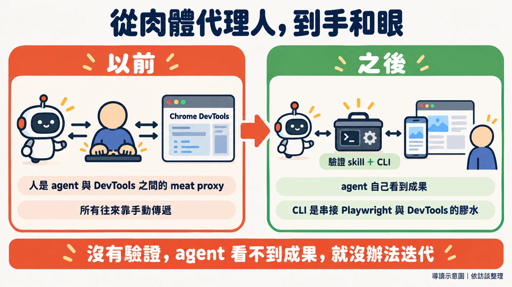

"here's how i shipped 2,500 PRs last month to production"
這是 Poteto 九月下旬發在 X 上的演講標題。十月三日，Matt Pocock 把這位 pstack 作者請上直播，花了一個多小時逐題追問。Matt 自己也在準備軟體工廠方向的課程，想知道從一次顧一到五個 agent，到同時有上百個在跑，中間到底隔著什麼。
Matt 的第一個問題，圍繞著 Poteto 常提的信任階梯（trust ladder）：越信任 agent，就越敢把更難的事交給它，也越敢同時放更多個去跑（00:02:42）。訪談裡有不少內容，都在談這個信任是怎麼蓋起來的。
聽到 2,500 這個數字，最常見的反應是：這些 PR 你怎麼審得完？Poteto 說，每次提到這個數字，被問最多的就是這句（00:41:06）。這個問題背後有個預設：每個 PR 都得有人從頭讀到尾。以下依訪談的順序，看這個預設怎麼被一層層拆開：先談怎麼讓 agent 看得見自己的成果，再談怎麼整理環境，審查要等到很後面才輪到。
這篇怎麼讀：除特別標明外，文中的做法與經驗都是 Poteto 在訪談中的自述；Matt 的提問與看法會註明是 Matt 說的。文中的時間點可以跳到影片對應位置（取自字幕檔，與播放位置可能略有出入）。逐字稿是自動轉寫，專有名詞已依官方資料校正。
認識 Poteto 與 pstack
Poteto 是 pstack 的作者。pstack 的 plugin.json 作者欄寫 Lauren Tan，README 自述曾在 Meta、Netflix、Cursor 工作，也是 React core team 成員，參與 React Compiler。訪談結尾，Matt 以 Lauren 稱呼 Poteto（01:06:18）。
Poteto 目前在 Cursor 工作。這家公司在 2026 年 8 月 14 日正式被 SpaceX 收購，影片裡的「SpaceX AI」，對應的是官方名稱 SpaceXAI。
pstack 是 Cursor 的一個開源外掛（MIT 授權），收在 Cursor 官方的 cursor/plugins 庫裡。裡面的 skill 是用 Markdown 寫成的工作流程，agent 照著做。README 還把常見任務整理成 23 個 playbook（例如修 bug、效能調查、重構），另有 24 條各自獨立的 principle（例如「做完之後，要用真實的成品證明它能用」）。入口是 /poteto-mode：它讀你的需求，挑一個 playbook，再叫出需要的 skill。
關於那個數字：2,500 是 Poteto 自己的說法，沒有外部稽核。訪談中 Poteto 也說過「2000 or however many」（00:39:56），所以本文寫作約 2,000 至 2,500 個，細節見文末資料卡。
一、從「肉體代理人」開始
故事的起點是一次倦怠。Poteto 離開 Meta 後休息了一個月，接著做了倦怠的人常做的事：開一個新的 side project（00:03:23）。時間是二月前後，社群正迷上 orchestration，不少人在做自己的協調器。她也被帶著走，等回過神，發現自己花了大把時間貼身盯著單一個 agent，寫了一堆 skill，卻沒辦法衡量哪一個有用，用她的話說是 flying blind。那個專案叫 noodle，她說它後來成了 pstack 的基礎。
春天，Poteto 加入 Cursor，被拉去處理 agents window 的效能問題。她深入看 flame graph（效能火焰圖）和 heap snapshot（記憶體快照），同時發現自己又成了瓶頸：自己就是 agent 和 Chrome DevTools 之間的 meat proxy，肉體代理人（00:06:19），也直說這讓人很煩。
Poteto 回頭看自己當初放棄的那批個人 skill，發現其中有些教訓還能用，尤其是驗證與嚴謹。她的觀察是，即使前沿模型也傾向走捷徑，所以很多 skill 的目標，變成「怎麼讓容易的事剛好就是對的事」（00:07:24）。
Matt 順勢做了一次氣氛檢查：AI 愈來愈強，領域知識是不是在貶值？她的看法正好相反。模型愈強，瓶頸愈落在你能不能把意圖講清楚（00:08:29）。她舉的例子是醫師或律師，只要稍微懂一點技術，就有機會做出很好的產品，前提是腦中的願景夠清楚。
Matt 說自己一直很在意措辭，因為 agent 會抓住某些詞，反覆使用。TDD 就是例子：重點不在你是否真的照 TDD 的流程做，而在這個詞讓 agent 開始寫測試、改變優先順序。Poteto 說自己照抄了他近期分享的一招，用 tautological（套套邏輯）這個詞來減少 agent 寫出的無用測試（00:10:40），認為這類詞把大量意圖壓縮在裡面。
二、米其林廚房
Matt 把這場對話框成「軟體工廠」，Poteto 說自己從來不愛這個詞：講到工廠，人不會聯想到品質和手藝，但做產品的人在乎的正是這些（00:12:32）。她停在「米其林廚房」，並說這個比喻剛好對應信任階梯。
比喻是這樣展開的。一個人在家做飯，什麼都自己來。家人一個個走進廚房，多數人會開始焦慮：沒人知道廚具放在哪，廚房的容量其實只有一個人（這句是 Matt 的措辭，00:14:33）。要讓一群人同時有產出，就得想清楚怎麼分工，讓整體勝過各部分的加總。當上主廚，人不再親自煮每一道菜，要管的是食材什麼時候訂、怎麼存、什麼時候備。她把這個角色形容成廚房的 tech lead。盤子端出去，名字還是主廚的，聲譽也是。
她的說法是，現在的原料換了樣子：廚房怎麼布置、skill 怎麼寫、環境與程式碼庫長什麼樣，才是進到產品裡的食材。
三、先給 agent 一雙手和一對眼睛
如果只能留一個 skill，Poteto 選驗證。她的比喻是給 agent「手和眼」（00:17:44）：它能把程式跑起來，像一般使用者那樣操作，還能除錯、抓 trace 和 snapshot。
這也是 Poteto 進 Cursor 後做的第一個 skill（00:18:06）。當時手邊已有 how、why、unslop 這幾個 skill（今天都收在 pstack 裡），但不管它們多好用，她自己仍是 agent 與結果之間的代理人。agent 看不到自己的成果，就沒辦法迭代。所以 loop 這個詞在她眼裡，最關鍵的部分只有一個：驗證。

有了驗證，才談得上爬山（hill climbing）：有一把評分的尺，agent 就能持續嘗試改進（00:19:21）。她說這是實驗室常用的詞，並順帶提到 Karpathy 的 autoresearch，一個讓 AI agent 在單張 GPU 的 nanochat 訓練上自動做實驗的專案，repo 建立於 2026 年 3 月 6 日。repo 的描述只講自動迭代。
Cursor 內部的驗證 skill 現在有很多個，其中一個會自動維護，每個人都在用，她稱它是關鍵基礎設施（00:20:21）。
把確定的部分變成腳本
Matt 說在 Poteto 的演講裡看到一支客製的 CLI，問它做什麼、為什麼要做（00:20:34）。
起初的理由是 context window。去年底到今年一月，大家都擔心壓縮過後 agent 會變笨，所以要省 context。現在這個顧慮淡了，CLI 卻留了下來，因為它解決了另一件事（00:21:59）。沒有 CLI 的時候，每個 agent 驗證時都要重新搭一遍環境，而且每個搭得都不一樣；上一個 agent 寫好、跑通的腳本，用完就丟。浪費的是 context，也是時間。
Poteto 把工作想成一條光譜：一端需要判斷，得把多份資訊拼起來思考；另一端純屬機械，例如把一種寫法改成另一種。後者不需要 agent 每次想出新方法，所以她的習慣，是把確定的部分抽成程式，只把需要判斷的部分留給 agent，skill 本身變成一層薄薄的說明。大規模遷移也這樣做：用 code mod（自動改寫程式碼的腳本）、走語法樹（AST），讓腳本機械地改（00:25:45），不讓 agent 逐檔重寫。
她對自己這支 CLI 的評價很低調：沒有什麼新穎，就是串 Playwright、Chrome DevTools protocol 和一堆 API 的膠水（00:23:32）。Matt 的解讀是，這等於把資訊藏在 skill 外面，讓 skill 保持短小，agent 也更穩定地做同一件事。
pstack 對照（README）：
create-verification-skill為沒有腳本化驗證的專案產生專屬的驗證 skill；maintain-verification-skill在驗證 skill 與實際 app 脫節時做修正；build-the-lever原則則是碰到不瑣碎的工作，先做出能完成或證明它的工具，因為工具是審查者可以重跑的成品。
四、新的工作是整理廚房
Matt 先給了一個定義：好的程式碼庫，是容易改的程式碼庫。換句話說，人和 agent 都被限制在很窄的路徑上。她接著說，工程師的新工作，很大一部分就是花時間在這個環境上（00:27:28）。
沒做這件事的人，容易卡在信任階梯的低層：對 agent 沒信心，唯一的辦法是貼身微管理，而微管理耗掉所有時間，沒有餘裕改善自己的做法（00:27:43）。她用工具比喻：就像一個開發者沒聽過 VS Code、Vim，連 Git 都沒聽過，只用記事本，deadline 逼近時也只能拿鈍刀硬切。切蒜太慢，就用壓蒜器，工具被發明是有原因的。
她還談到 TypeScript 的 type narrowing：從什麼都可能是的寬型別，靠型別守衛與執行期檢查，縮小到「這不只是 string，是一種特定的 string」（00:30:28）。她認為程式碼庫的約束與此同理：縮小可能性的空間，最好只剩一種做法。
她正在做一套內部框架（逐字稿轉寫為 Dune，名稱未能查證），形容它像 Electron app 的內部版 Next.js。它不開源，附帶很嚴格的 lint 規則（程式碼的自動檢查），結構上也只留一種做法：每個 feature 有自己的目錄，新功能就往新目錄放。這個設計源自一次教訓：Grok Bot 最初幾版，是 8 個各超過一萬行、什麼都往裡面塞的 God file（上帝檔案）（00:32:39），她只好把它拆開。
從那次經驗長出一個習慣：觀察 agent 怎麼失敗，每看到一個錯誤，就想怎麼把它變成 lint 規則，讓程式碼庫根本不讓這種錯發生（00:32:59）。Matt 的總結是，這樣 agent 不必記住一堆規則，走著走著撞上，就在對的時機被擋下來。
pstack 對照（README）：
encode-lessons-in-structure原則是把規則寫成 lint、metadata 旗標、執行期檢查或腳本，而不是再多寫文字。
五、這麼多 PR 從哪裡來：兩個迴圈
編者註：Grok Bot 在 8 月 11 日才推出 beta，Cursor Projects 在 9 月 10 日才推出，而貼文講的是「上個月」的 PR，所以這些工具不能全算成那個月 PR 數的功臣。不過 Poteto 自己，確實把這個量歸因於下面這些迴圈。本節描述的是 Poteto 現在的做法。
Poteto 先把前提說清楚：沒有前面那些環境工作，做不到這個量（00:34:44）。她的說法是，自己先蓋好一間廚房、一間餐廳，之後就不必再親自在場。Matt 接了一句「你開了一家連鎖餐廳」，她補充：每個專案、每個大聊天，就像一間餐廳，自己在幾間之間像直升機那樣來回巡（00:35:44）。
Poteto 在這裡做了一個區分，自己也說「不確定定義用得對不對」（00:36:37）：
- 內迴圈：agent 工程師為了某個意圖的快照在寫程式。
- 外迴圈：那份快照會過期。新資訊出現在 Slack、Linear、X，出現在別人說的一句話裡。過去只有 Poteto 自己能當搬運工，把背景一份份搬給 agent。
她的目標，是把外部觸發接進內迴圈，讓 agent 自己取得背景。這裡用到 Grok Bot：它有 connector（串接外部服務的連接器），可以設定定期執行的 routine，持續監看 Slack 頻道、信箱或 Linear。官方文件列出的整合包含 Slack、email、calendar、issue tracker 等；Linear 不在官方使用案例頁，是 Poteto 自述的用法。她也說可以用其他工具（00:42:05），原則本身不綁定某個產品。她舉了個簡單的例子：假設有 Slack MCP，或自己的 harness 訂閱了某個 Slack 頻道，就能叫 agent 每逢 bug 回報就去分流，用先前累積的驗證 skill 重現問題，確認 main 上確實還有這個 bug，排除是使用者的環境、資料或沒裝套件造成的（00:38:23）。
Poteto 說這一段有個大主題：不斷問自己，我在哪裡是瓶頸？為什麼 agent 需要我來回答這個問題？目標是讓 agent 自己回答，而且靠真實資料，不靠幻想或猜（00:39:08）。談到 company brain、context graph 這類詞，她說它們不見得複雜或抽象，本質上就是把 agent 需要、原本要自己傳遞的資訊，教它自己去拿（00:39:30）。
Poteto 說自己沒有一個一個去開上千個聊天。大量使用的是 Cursor 新推出的 Projects，當作內迴圈，Grok Bot 則是外迴圈（00:45:08）。她還回憶，以前在 Netflix 的時候，管理者之間最常被提起的事情之一，是 context not control：給背景，不要控制（00:42:43）。她認為這很適用於 agent：教它自己取得資訊，就不必每一步盯著。
依官方 changelog，一個 Project 在雲端自己的電腦上執行，合上筆電也不會中斷。它的 coordinator agent 自己不寫程式，負責規劃、建立並管理實作的 agents。她稱它是你的 executive chef、你的 chief of staff（00:44:10）。連 Cursor 都不必打開，只要對 Grok Bot 說「為這一串相關任務開一個 project」就好。
- Slack、Linear、X 的 bug 回報 → Grok Bot 以 routine 持續監看
- Grok Bot 以 routine 持續監看 → 傳給 Cursor Project 的 coordinator agent
- 傳給 Cursor Project 的 coordinator agent → coordinator 派工給多個 agent 相關問題一起處理
- coordinator 派工給多個 agent 相關問題一起處理 → agent 用驗證 skill 重現問題、驗證修正
- agent 用驗證 skill 重現問題、驗證修正 → verifier agent 實際操作 app 找出迴歸問題，agent 再修
- verifier agent 實際操作 app 找出迴歸問題，agent 再修 → 通過後 agent 自己合併 PR
- 通過後 agent 自己合併 PR → 人類隔天翻 commit 歷史抽查
- 人類隔天翻 commit 歷史抽查 →（發現問題） revert、修改 或新增 lint 規則與 skill
- revert、修改 或新增 lint 規則與 skill →（之後 agent 撞上這些規則） agent 用驗證 skill 重現問題、驗證修正
編者整理的示意圖，非講者原圖；各環節是 Poteto 在訪談不同時間點分開講的。
Matt 問：如果一次湧進 30 個 issue，coordinator 可以自己分派吧？Poteto 說是（00:44:36）。她的看法是，一個 issue 開一個 agent 當然也行，但串起它們的那條線就斷了，還可能重複工作。如果這些 issue 其實都在講效能，coordinator 能當成同一個問題來想；多份略有差異的回報，有時反而幫人拉遠一點，看出真正的問題比第一份回報顯示的位置更高一層。
這些 PR 也不全是新功能。Poteto 說有不少工作是 gardening，也就是整理庭園（00:47:16）。順帶一提，好環境對新進同事一樣有用：第一天就能產出像樣的程式碼，不必先開一堆低品質的 PR。她舉了一個做法：React 有很多容易踩的坑，所以有個 agent 不斷找壞寫法，但刻意不讓它馬上修，而是先追加到一份文件裡，每隔幾天回頭看一次，她會說「這些其實是同一件事」（00:49:03）。她認為，只顧著執行進來的訂單，容易錯過全貌，緩衝區正好逼人看見大局。
Poteto 說自己現在相當於有超過 10 個 chief of staff，各管一個領域（00:53:22）：一個盯 Grok Bot 桌面 app 的效能，一個修使用者回報的 bug，一個純粹好玩地探索換語言重寫，看看原生 app 會是什麼樣子。
六、抽樣，而不是把關
Poteto 對「這個量從哪裡來」最直接的回答，是倒推一個問題：怎麼走到 agent 能合併自己程式碼的那一步（00:40:46）。這句話一出，Matt 先請 Poteto 稍等，聊完迴圈再回頭。回頭之後的答案是：沒有每道菜都嘗。
Poteto 說，不想走到永遠不嘗味道的地步，但在這個規模下也不可能每一道都試，所以改成抽樣。談到這裡，她自己說，工廠的比喻在這裡反而更貼切：像工廠的品管主管，不可能逐件檢查，但每天進去看 PR 的品質，嚴格檢視 agent 寫的程式碼（00:50:56）。發現問題，要修的是環境。一次性的事件，也許不用處理；如果看到多個 agent 犯同樣的錯、走同樣的捷徑（00:51:47），就是該調整廚房的訊號：改 skill、約束、lint、型別系統。
Poteto 也坦白說，這條路不容易。不是裝了 pstack 就能得到，要花很多時間想程式碼、觀察 agent 在哪裡失敗，再有意識地設下護欄（00:52:28）。
這算不算「黑燈工廠」
Matt 先問，這是不是「黑燈工廠」：完全不開燈、沒人看管的全自動生產（00:52:56）。Poteto 承認，從某個角度看算：agent 自己合併 PR，人就去睡覺了，agent 二十四小時工作。她提到 pstack 裡的 full autopilot（對應 README 的 autopilot-full playbook）。依她的說法，啟動後會對每個 PR 叫出一批 verifier agent，用 fuzzing 的方式實際跑起 app、像真人一樣亂點，找迴歸問題和 bug，agent 自己修，再來一輪，直到 PR 能合併（00:53:58）。
代價也說得直接：非常吃 token（00:54:37）。可以調整，十個 verifier 換成一個，或只叫 agent 自己驗證一下。
Poteto 把敢放手的原因，歸給兩樣東西的組合：驗證，加上環境（00:54:52）。
人在哪裡？合併之後，隔天早上看 commit 歷史。發現問題就 revert 或修改，並新增 lint 規則（00:55:05）。
第一天打開自主合併的那晚很害怕，擔心自己造成 sev（嚴重的線上事故）。她說這需要不少勇氣，現在睡得更好了（00:55:26）。
Matt 指出，這和 Karpathy 最初定義的 vibe coding（程式碼幾乎不存在）不同。她同意，並提出一個畫面：也許有個調光開關，有些區域暗，有些亮，所以餐廳比工廠更貼切，餐廳老闆偶爾還是會去店裡看一眼、嘗一口（00:56:25）。他把這濃縮成一句：抽樣，而不是擋路。
pstack 對照（README）：
autopilot-fullplaybook 的描述是「讓獨立的 PR 走到合併，每個 PR 一個負責的 owner，每一輪由根層的 swarm 給出判定」；never-block-on-the-human原則是先往前走，呈現結果，讓人事後修正，只有不可逆的動作才保留確認。
七、遇到單向門怎麼辦
Matt 提出最難的一題：Poteto 所在的環境很重視安全，但有些人做的是醫療、法律或金融（00:57:04）。他把 PR 分成兩種門：可以合併後再 revert 的，是雙向門；會造成資料遺失、難以回頭的，是單向門。如果大多數 PR 都是單向門呢？
她的回答，取決於驗證做得多好。領域本身可驗證時，單向門在某種程度上會變成雙向門；很難用程式驗證的領域，就很難走到這一步。軟體工程恰好大多可驗證，數學的某些面向也是。至於全是單向門的團隊該怎麼辦，她老實說這是個好問題，自己沒有答案（00:58:44）。
她的期待放在為 agent 設計的新語言。其中一個最讓她著迷的是 Bend，形容它把寫程式與寫證明結合在一起（00:59:05）。過去要證明程式正確，得換另一種語言，像 Lean、TLA+（專門用來寫形式證明的工具），用 solver 檢查有沒有涵蓋所有情況、有沒有 race condition。如果證明顯示正確，為什麼不直接合併？
Bend 要註明版本。Bend 原本以大規模平行運算聞名，但官方 repo 現在的描述是「Bend 2：一個藉由證明擋下 AI 錯誤的快速語言」。她只說 Bend；對照官方 repo，「程式與證明結合」這個描述屬於 Bend 2。
八、刀要自己磨
最後 Matt 問了很多人心裡有的問題：pstack 和我的 skill，到底該用哪一套？談話中也提到一個當天被提起的技巧：回頭掃自己過去的對話紀錄，找出你一再糾正 agent 的地方，把學到的東西變成可重複使用的 skill（01:01:44）。
Poteto 認為兩者互補。skill 說穿了就是把流程變成文字，是 Markdown。她更在意的畫面是：每位廚師換餐廳，都帶著自己的刀（01:02:51）。她說，信任說到底，是信任自己的工具。有人會把 Matt 的 grill-with-docs 或 wayfinder 搭配 pstack 裡執行類的 skill，有人多用 Matt 的，有人多用 Poteto 的，每個人最後的組合都不同。
對照：
grill-with-docs、wayfinder在 mattpocock/skills，poteto-mode在 pstack。逐字稿把poteto-mode轉寫成 "potato mode"、把grill-with-docs轉寫成 "grill me with docs"，此處依 repo 目錄名稱校正。
Poteto 說，過去的對話紀錄是寶庫，因為那是「實際發生過的流程」，不是腦中的抽象想像（01:03:49）。pstack 裡的 recall 就是這樣來的：她做 Cursor app 的虛擬化時 bug 很多，每次開新對話，都想把上一次的背景帶過來。recall 把這個流程壓縮成一個 skill，不必每次寫一大篇說明。
pstack 對照（README）：
recall會用你自己的聊天紀錄與共享紀錄，重建某個主題的近期背景，交回一份精簡的現況簡報；automate-me會挖你最近的對話紀錄，依你實際的工作方式起草一個專屬的<你的名字>-mode。
她也預測 skill 會愈來愈短。去年的 skill 比較像實作細節，列出確切的指令；有了新一代模型，可以把這些刪掉，專注在流程，skill 變成一連串步驟（01:05:11）。
收尾時兩人聊到：skill 裡沒有魔法，就是文字。如果有任何魔法，也只在於選了哪些字、用了哪些措辭，以及把抽象流程轉成語言時付出的思考（01:05:56）。
重點結論與實際啟示
以下七點是編者整理的，順序並非 Poteto 在訪談中給的。它們都從同一個問題出發：我在哪裡是瓶頸？
- 先找出自己在當肉體代理人的地方。 agent 和工具、和外部系統之間，哪些來回是你在手動傳遞？
- 第一個 skill 做驗證。 讓 agent 看得到自己的成果，迴圈才成立。
- 把確定的部分寫成腳本。 skill 只留需要判斷的部分。
- 看到多個 agent 重複同一個錯，就改環境。 lint 規則、型別、目錄慣例，比只糾正那一個 agent 有用。
- 把外部觸發接進內迴圈。 讓 agent 從 Slack、issue tracker 自己取得背景。
- 要放手之前，先想清楚你的領域驗證得了多少。 她敢放手，靠的是驗證加環境；領域能驗證，單向門有機會變成雙向門，不能的話，她自己也說沒有答案。
- 回頭挖自己的對話紀錄，當作 skill 的原料。
保留意見
- 訪談沒有談到團隊規模、token 預算或事故紀錄，具體提到的事故風險只有第一晚擔心造成 sev。其他團隊能複製到什麼程度，影片沒有給答案。
查證資料卡
| 項目 | 內容 | 依據 |
|---|---|---|
| 月 PR 數 | 本人自報約 2,000 至 2,500 個。貼文標題寫 2,500，訪談中 Poteto 說 "2000 or however many"。Cursor Compile London 議程上，Lauren Tan 的演講標題則是 "I Shipped 2,000 PRs Last Month" | 影片、Compile London 議程；X 貼文（需登入，未直接核對） |
| Cursor 被收購 | 2026-08-14 正式被 SpaceX 收購 | Cursor 官方部落格 |
| Cursor Projects | 2026-09-10 推出；雲端的 coordinator agent 負責規劃與派工 | 官方 changelog |
| Grok Bot | 2026-08-11 由 SpaceXAI 推出 beta，Cursor 付費方案也能使用 | 官方公告、文件 |
| pstack | MIT 授權；作者欄 Lauren Tan；README 自述 23 個 playbook、24 條 principle（v0.15.6） | 官方 repo |
| autoresearch | repo 建立於 2026-03-06 | GitHub |
來源
影片與逐字稿
- LIVE: Poteto (creator of pstack) on shipping 1,000's of PR's a month at SpaceX（Matt Pocock 頻道，2026-10-03）。逐字稿為自動轉寫。
官方與第一手
- pstack（cursor/plugins）：README、
plugin.json、LICENSE（2026-10-03 讀取，v0.15.6） - Cursor is now a part of SpaceX（2026-08-14）
- Cursor Projects changelog（2026-09-10）
- Introducing Grok Bot（2026-08-11）、Grok Bot 文件、使用案例
- Cursor Compile London 議程：Lauren Tan 的演講標題為 "I Shipped 2,000 PRs Last Month"（2026-10-03 讀取）
- karpathy/autoresearch
- Bend（bendlang/bend）：原 HigherOrderCO/Bend 已轉址至此
- mattpocock/skills
- poteto/noodle
未能直接核對
- Poteto 的 X 貼文：X 頁面需登入。標題與發文日期（約 2026-09-21）來自搜尋結果，未直接核對原頁。